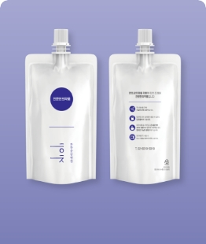
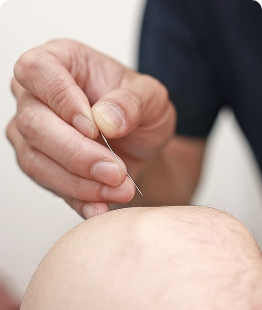

제목
부제목
근재생 역동추나
잘못된 생활 습관이나 외상 등으로 균형을 잃은 근조직을 역동적으로 교정하는 한창한방병원만의 추나요법

진근탕
근세포 활성 천연물의 유효성분만을 고농축으로 담은 한창한방병원만의 1:1 맞춤 근골격 강화 기능한약
진근약침
진근탕의 유효성분을 주입해 빠르게 통증을 해소하고 근육과 관절 기능을 강화하는 인체친화적 약침치료

근육이완 미세침
머리카락보다 얇은 미세침으로 경직된 근조직의 경혈을 자극하고 기혈의 흐름을 원활하게 하여 근기능을 향상하는 침치료
제목
부제목
제목
부제목
제목
부제목